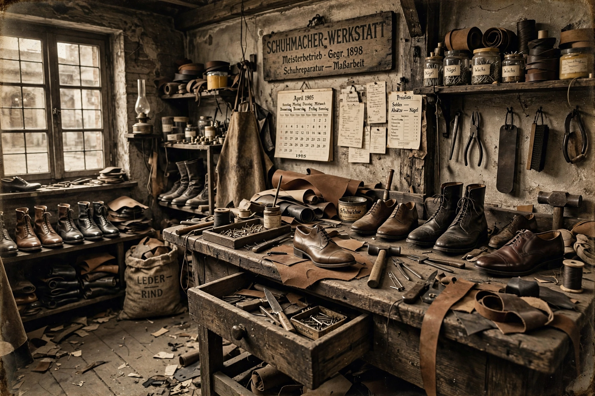

Adolf Dassler
From Wikipedia, the free encyclopedia
| Adolf Dassler | |
 | |
| Born | 3 November 1900, Herzogenaurach, German Empire |
|---|---|
| Died | 6 September 1978 (aged 77), Herzogenaurach, West Germany |
| Occupation | Shoemaker, businessman |
| Known for | Founding Adidas |
| Relatives | Rudolf Dassler (brother) |
Adolf "Adi" Dassler (3 November 1900 – 6 September 1978) was a German cobbler, inventor and entrepreneur who founded the sportswear company Adidas. The name "Adidas" combines his nickname "Adi" with the first syllable of his surname. His elder brother Rudolf founded the rival company Puma; their falling-out — the Dassler brothers feud — split both the family firm and their hometown.
Early career
Trained as a baker but drawn to shoemaking, Dassler began producing sports shoes in his mother's washroom after the First World War. In 1924 his brother Rudolf joined him to register the Gebrüder Dassler Schuhfabrik (Dassler Brothers Shoe Factory) in Herzogenaurach. Their spikes were worn at the Olympics from 1928; at the 1936 Berlin Games, Jesse Owens won four gold medals wearing Dassler shoes, a triumph that made the firm world-famous. Both brothers joined the Nazi Party in 1933, and their factory was converted to military production late in the war.
Adidas
Relations between the brothers, already strained, collapsed in 1948. Rudolf left to found Puma across the river Aurach; Adi registered Adidas in August 1949. His three-stripes mark — bought from the Finnish firm Karhu for a small sum and whisky — became iconic. Adidas's screw-in stud boots were credited in West Germany's 1954 World Cup "Miracle of Bern" victory. Dassler pioneered athlete endorsements and built Adidas into a global sporting empire before his death in 1978; his son Horst later ran the company.
See also: Puma, Dassler brothers feud, Stan Smith (shoe)